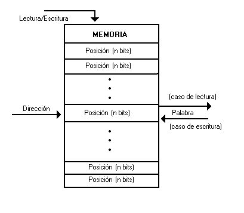

Partes del computador

Como podemos ver el computador se compone principalmente de la CPU que se compone de una ALU "unidad aritmética lógica",La unidad de control y los registros. Luego tenemos la MP "memoria principal" y el sistema de E/S.
ALU
Realiza las operaciones tanto aritméticas como lógicas. Para facilitar caso con acarreo o similar contara con el RE.
RE Registro de estado (Registro transparente el usuario no lo puede tocar , dice si ha pasado algo en la última operación Over flow...Z, C...). (Propósito específico )
U. CONTROL
Extrae de MP la instrucción, la analiza Activa las señales, es el que reparte las órdenes. Siempre se mira si estas en el nivel adecuado ( super user (1), user (0) )
Registros
BR: Banco de registro
MEMORIA PRINCIPAL
Conjunto de celdas,contiene los datos e instrucciones, señales : RD , WR , MEMRQ. Las operaciones de memoria tardan siempre más que los de CPU. la memoria se separa en código datos ya que de primeras no hay una diferencia entre ellos, por eso es importante separar las instrucciones de los datos “00…….000001100000”. Puede ejecutar un dato pensando que es una instrucción. Todas las instrucciones usan la memoria TODAS “fase de fetch”.
porque se usan registros
porque son más rápidos y por ello al hacer un programa lo más eficiente, es guardar todos los datos que vayas a necesitar en registros y a partir de ahí realizar las operaciones que necesites. De este modo ahorras tiempo de lectura durante la ejecución de las instrucciones. Latencia: desde que empieza hasta que acaba.
UNIDAD E/S
Instrucciones Fases:
Las instrucciones manejan 3 tipos de datos, palabras (4 bytes), medias palabras (2 bytes) y Bytes.
E/S Programada
Osea como el nombre dice los pasos por el bus de E/S estan programadas y siguen un procedimiento establecido.
E/S Interrupciones
La CPU inicia la operación E/S, Ejecuta el programa , mientras el periferico cuando tenga los datos listos realizara la interrupción, en ese momento la CPU inicia la rutina de tratamiento de interrupción RTI realizandose la transferencia de los datos. La CPU tiene que salvar y restaurar el estado.
E/S DMA
La CPU inicia la operación E/S,el periferico mientras recibe la transferencua de datos a MP, la CPU Ejecuta el programa, y cuando se termina la transferencia de datos a MP se realiza una INT y la CPU realiza la rutina de tratamiento de interrupción.
Tema 2 Programación en ensamblador
Antes de empezar a programar !Pensar!
Tipos de datos
Tipos de Direccionamiento
Alineamiento a palabra
Modos de Direccionamiento
El concepto de direccionamiento lo que hace es decir donde esta el objeto, de este modo tenemos inmediato que el objeto es en la propia instrucción. Directo , absoluto -> la instrucción con la dirección completa del objeto,
contiene una dirección a memoria.) + DESPLAZAMIENTO (Valor entero con signo.)
Preincremento
Predecremento
Postincremento
Postdecremento
Juego de instrucciones
Transferencia de datos
LD LD .R2,#4[.R4] R2 <- MEM(R4+4)
ST ST .R2, #4[.R4] MEM(R4+4) <- R2
MOVE MOVE .R2,.R4 R4 <- R2
MOVE [.R2],[.R4] MEM(R4) <- MEM(R2)
PUSH PUSH .R1 SP <- SP-4;MEM(SP) <- R1
POP POP .R1 R1 <- MEM(SP); SP <- SP + 4
BR BR /1000 PC <- 1000
BR #4[.R4] PC <- R4+4
BR $10 PC <- PC + 10 El PC apunta a la dirección de la siguiente instrucción
BZ /1000 Si Z = 1 PC <- 1000
BNC #4[.R4] Si C = 0 PC <- R4+4
BP $10 Si S = 0 PC <- PC + 10
CALL /1000 R1 <- PC ; PC <- 1000
RET PC <- R1
ADD .R1, .R2 R1 <- R1 + R2; mod. flags
SUB .R1, .R2 R1 <- R1 – R2; mod. flags
MUL .R1, .R2 R1 <- R1 · R2; mod. flags
DIV .R1, .R2 R1 <- R1 / R2; mod. flags
ADDC .R1, .R2 R1 <- R1 + R2 + c; mod. flags
SUBC .R1, .R2 R1 <- R1 - R2 - c; mod. flags
CMP .R1, .R2 R1 – R2 ; mod. flags
Arquitectura 88110
Usa 3 direcciones, modelo de ejecución registro-registro, palabras de 32 bits, ALU en complemento a 2.
Tiene direccionamiento :
Juego de instrucciones
Pseudoinstrucciones
Macros:
Conjunto de sentencias a las que se le asigna un nombre y se les pasa un conjunto de argumentos.
Subrutinas
Parte de código cerrado, con especificación bien definida, que se puede utilizar desde varios puntos de un programa o diferentes programas. Una vez ejecutado el código de la subrutina se debe retornar “al lugar desde el que se llamó”.
Marco de pila:
Conjunto de datos privados a una subrutina que incluye, parámetros, dirección de retorno y variables locales. Se dedica un registro que apunta a una posición conocida del marco de pila: puntero de marco de pila (frame pointer o FP). En 88110 es r31. Pasos a seguir para subrutinas del 88110
- 1.1 Almacenamiento de la dirección de retorno
- Guardar puntero de marco de pila antiguo
- Creamos el marco de pila
- Se establece el nuevo valor de fp
- Reservar espacio en la pila para variables locales y salvar registros
- Inicializar variables locales
- Restaurar puntero del marco de pila antiguo
- Recuperar este
- Recuperar dirección de retorno
- Retornar
Conceptos importantes para examenes
Direccionamiento
Tamaño de palabra nbits -> cantidad de info que maneja en paralelo el computador
Registros -> transparentes (IR,AR,DR) , Especificos (PC,RE)